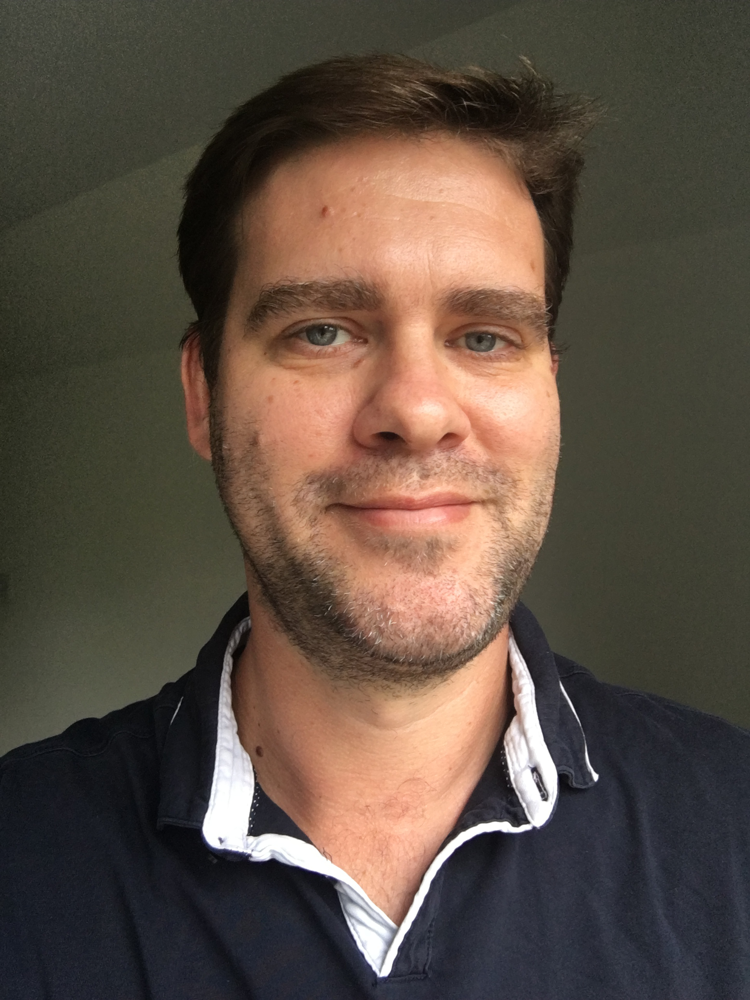

Dr Mark Allan Bailey BSc PhD MB BChir MRCP MSc

Work Experience
| Duration | Position |
|---|---|
| Mar 2024 - now | Director for Bailey Medics Limited (working with the trading name Let’s Do Digital) |
| Mar 2024 - now | Physician engineer (aka clinician-who-codes), Canvas-Medical, San Francisco, USA. |
| Mar 2023 onwards | Locum Respiratory and Sleep Consultant, Salisbury, East Grinstead, and Bristol. Both remote and onsite clinical practice. |
| Feb – Mar 2023 | Locum Registrar in Emergency care and SDEC |
| Jan - July 2023 | Interim Chair of Council, Faculty of Clinical Informatics (FCI). Leading 1200+ clinical informatics members in this national position. |
| Nov 2022 - Mar 2023 | Clinical Informatics and Sleep Advisor, Sleepstation. Working closely with this established health tech company to build a new international sleep apnea digital investigation and treatment service. |
| 2017 - Feb 2023 | Speciality Doctor and Digital Lead in Respiratory Medicine. Through logistical and digital optimizations, dramatically reduced sleep treatment breach rates by 79%, utilizing an in-house built digital solution. Built digital solution for improving the management of patients with tuberculosis and bronchiectasis. Reduced clinical admin time by 30% via an in-house built robotic process automation program. Successfully managed a DevOps team and collaborated with NHS-X innovation lab to build an open-source and modular digital lung cancer pathway prototype. This prototype is being implemented at Oxford University Hospital for anti-cancer agent management. Organized and ran clinician and patient stakeholder meetings. Placement student supervisor. Successfully secured £36,000 funding for 2 computer science students on placement at the trust. Strong and close working relationship with CIO, deputy CIO, CCIO, and medical director. Active member of the project board for EPR PaperLite and Order Comms outpatients build. Strong networking skills, including working closely with the Medical Director of the SWAG cancer alliance to enable better digital innovation in the Southwest. On EPR implementation input group. Led own named sleep clinics, sleep MDTs, and ward rounds. Fully competent in thoracic ultrasound scanning and pleural procedures. |
| 2022 onwards | Visiting Fellow in Health Tech, University of Gloucestershire |
| 2016-17 | Locum Senior House Officer |
| 2015-16 | ST1 Paediatric Doctor |
| 2013-15 | Foundation Doctor |
Other Positions
| Duration | Position |
|---|---|
| 2022 - 2023 | Co-lead for the “Let’s Talk Digital Conference”, co-hosted and sponsored by Gloucestershire University and SWAG cancer alliance. |
| May 2022 – July 2023 | Council member of the Faculty of Clinical Informatics |
| 2021-now | Board member of NHS PyCom |
| 2022 | Q community member |
| 2019 | Member of the OSA Partnership Group, sponsored by Resmed |
| 2018 | Member of the British Thoracic Society and European Respiratory Society |
Education
| Duration | Degree/Course |
|---|---|
| 2021-23 | NHS Digital Academy Digital Leadership MSc with Merit, Imperial College London |
| 2023 | Silver QI (Quality Improvement), Gloucestershire Hospitals NHS Foundation Trust |
| 2022 | Edward Jenner programme leadership course, NHS Leadership Academy |
| 2019 | MRCP exams completed |
| 2009-13 | Graduate Course in Medicine, University of Cambridge |
| 2003-07 | PhD in Medicinal Chemistry, University of Brighton |
| 2000-03 | BSc (Hons) in Chemistry, University of Southampton |
Training Courses
| Duration | Course |
|---|---|
| 2023 | Trustee training, NCVO |
| 2021 | Advanced Life Support Certificate |
| 2018 | Edinburgh course in Sleep medicine |
| 2017 | West Midlands Acute Internal Medicine Conference, Queen Elizabeth Hospital, Birmingham |
Books Published
- Bailey MA. Bailey’s Pharmaceutical Flash Cards. Kindle Format.
- Bailey MA. Clinical Examinations and Skills – Medical Student Centered. Kindle Format.
Papers Published
- Bailey MA, Saraswatula A, Dale G, Softly L. Paediatric sedation for imaging is safe and effective in a district general hospital. Br J Radiol. 2016; 89: 20150483.
- Bailey MA, Ingram MJ, Naughton DP, Rutt KJ and Dodd HT. Aminosalicylic Acid Conjugates of EDTA as Potential Anti-inflammatory Pro-drugs: Synthesis, Copper Chelation and Superoxide Dismutase-Like Activities. Transition Met Chem. 2008; 33: 195-202.
Bailey MA, Ingram MJ, and Naughton DP. A Novel Anti-oxidant and Anti-cancer Strategy: A Peptoid Anti-inflammatory Drug Conjugate with SOD Mimic Activity. Biochem Biophy Res Comm. 2004; 31: 1155-1158.
Presentations at Conferences
- “Digital Health ReWired, March 2023, Presented the implementation plan for Spiritum Duo at Oxford University Hospital NHS Foundation Trust.
- NHS-R conference, November 2022, presented the Lung cancer Digital Pathway work.
- NHS PyCom Show and Tell, April 2022, presented the Lung cancer Digital Pathway work.
- ePoster, Faculty of Clinical informatics, 1st July 2021, presenting a stand-alone RPA program (called Quick Spiritum) and how it has reduced time for routine clinical tasks by 30%.”
- Two ePosters at the ERS Sleep and Breathing conference, 16-17th April 2021. Presented sleep service improvements which lead to a 79% reduction in breach rates through the use of a new pathway and the use of automation.
- East of England Post-OSCE Conference, 2015. As the lead organiser, I presented the work my team undertook to organise and run a highly successful mock OSCE for final year medical students. We helped 9 out of 31 students gain distinctions in their final examinations. Ordinarily, this cohort of students only receives around 3-4 distinctions a year.
Awards
- Best Silver Quality Improvement presentation, Nov 2020, Gloucestershire Royal Hospital. For work done to improve the sleep service.
- Best Presentation Award, 2015, East England Deanery. Awarded first prize for a presentation I gave in regards to our mock OSCE work.
- Foundation Trainee Award 2014-15, West Suffolk Hospital. Awarded for organising an exemplary final year mock OSCE, as well as for completing an important audit covering the safe and effective sedation of paediatric patients for imaging purposes.